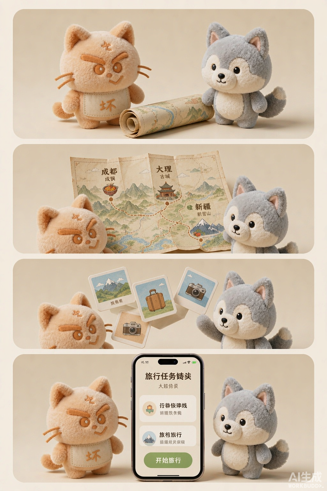

这一幕正在加载…
计划与行动50
享受与体验50
应变与协作50
体力100
心情75
先选一个应对方式（不会显示内部计分）

七个旅行剧情 · 你的每次选择都会暴露旅行人格
⚠️ 场景价格、活动时长和分类标签均为演示数据；结果用于旅行风格探索，不构成心理测评。
你和朋友「小满」去成都玩三天，总预算 ¥5,000。小满喜欢拍照，但不适合连续高强度步行。
（演示场景，不代表真实价格或真实人物）
确认后将创建本地会话并自动保存
TRAVEL PERSONALITY
回顾这三天里的每一个选择——不是所有猫，都走一样的路。
基于完整三天行程生成
显示 8 / 8 种风格
没有找到符合条件的人格。
建议减少筛选条件，或清除全部筛选。
横向比较 2–3 种旅行风格（数据与图鉴同源）